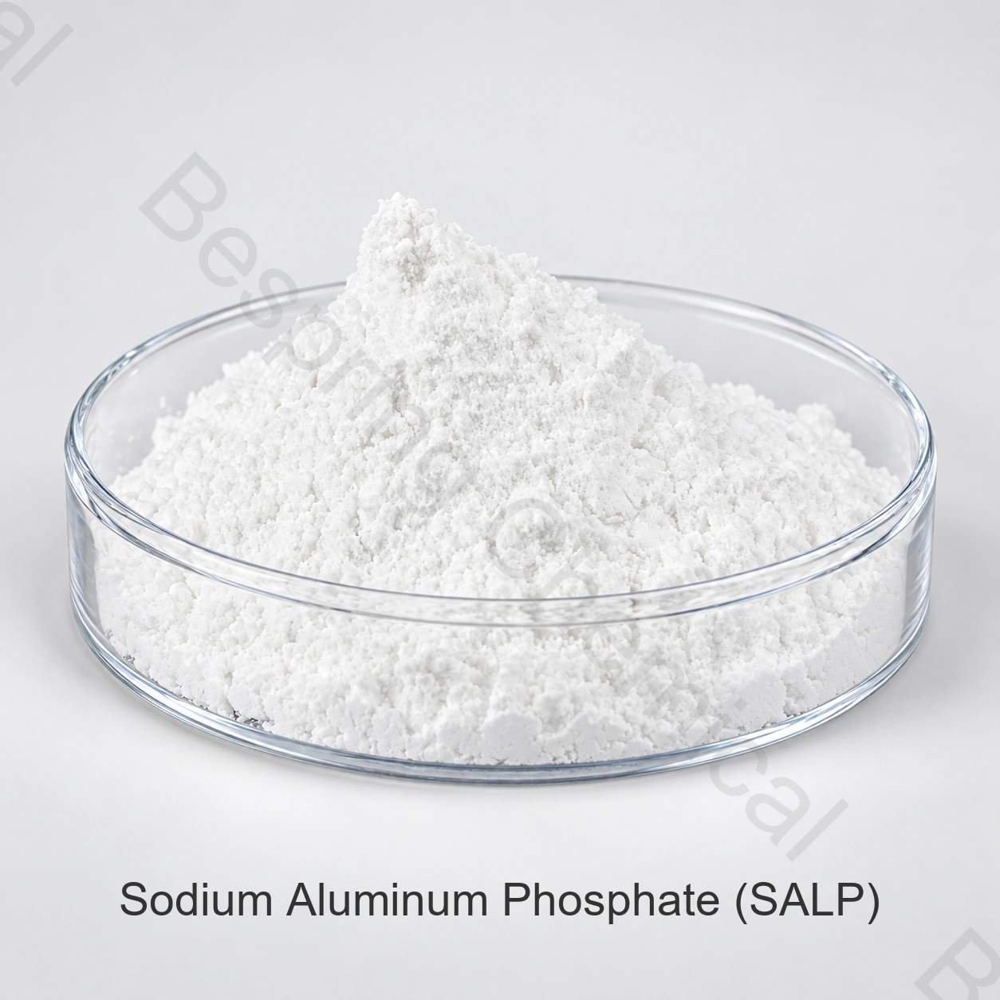

Reacción controlada
Compare la liberación de gas con el proceso de horneado previsto.
Ingrediente alimentario · Evaluación técnica B2B
Ácido leudante de reacción relativamente lenta para evaluar junto con el bicarbonato en la receta final.
Indique aplicación, cantidad, destino y documentos requeridos para evaluar una oferta concreta.

Identidad del producto
El fosfato ácido de sodio y aluminio es un ácido leudante. Compruebe la identidad y el grado ofrecidos, junto con la normativa del mercado de destino.
Función tecnológica
Su perfil de reacción puede ayudar a controlar la liberación de gas durante el horneado. El resultado depende del bicarbonato, la formulación y las condiciones de proceso.
Compare la liberación de gas con el proceso de horneado previsto.
Mida altura y estructura frente a un control comparable.
Evalúe miga, porosidad y uniformidad entre lotes.
Compruebe el efecto de mezcla, reposo y temperatura.
Aplicaciones
Se evalúa en mezclas para panificación y productos horneados donde esté autorizado. Realice pruebas de volumen, miga y sabor.
Ajuste el SALP con bicarbonato y otros ácidos de la fórmula.
Valide la reacción bajo el tiempo y la temperatura reales.
Datos de referencia
Los datos son de referencia. Alinee métodos, límites de impurezas y criterios de aceptación con la especificación y el COA del lote.
| Parámetro de ensayo | Especificación | Expresión |
|---|---|---|
| Ensayo de SALP (Na₃Al₂H₁₅(PO₄)₈) | ≥ 95,0% | Especificación suministrada |
| Arsénico (As) | ≤ 0,0005% | ≤ 5 mg/kg |
| Metales pesados (como Pb) | ≤ 0,001% | ≤ 10 mg/kg |
| Plomo (Pb) | ≤ 0,0002% | ≤ 2 mg/kg |
| pH (suspensión al 1 %) | 2–3 | Ácido |
| Pérdida por ignición | 15–16% | Confirme el método en la especificación |
| Aspecto | Polvo blanco | Inspección visual |
Embalaje y logística
Confirme peso neto, material del envase, protección frente a humedad, marcado y plan de paletización para la operación concreta.
Almacenamiento
Proteja los sacos de humedad, calor y contaminación; siga las instrucciones de la ficha de seguridad.
Consultas del comprador
La equivalencia con otros ácidos leudantes debe demostrarse en una prueba de formulación.
Se evalúa como ácido leudante en sistemas con bicarbonato y uso autorizado.
El producto se identifica como INS 541(i); confirme el uso permitido y la denominación aplicable en el mercado de destino.
No. Es una referencia; el COA identifica los resultados del lote concreto.
El envase, peso neto, paletización y carga se acuerdan para el pedido aprobado.
Indique aplicación, especificación, cantidad, envase, destino y documentación.
Consulte disponibilidad y pida versiones actuales vinculadas al grado ofrecido.
Consulta de suministro
Indique la aplicación, el grado, la cantidad, el país de destino y los documentos que necesita. Confirmaremos una oferta concreta.